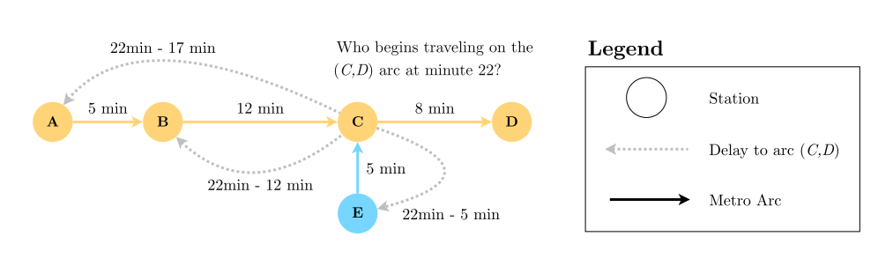

Lecture XII - Passenger Flow Control in Urban Rail
Applied Optimization with Julia
Introduction
FIFA World Cup 2022 in Qatar
Public transport
- FIFA Worldcup 2022 took place in a small region
- The capacity of the metro system was finite
- More than 1 million tourists where expected
- Metro usage was free for all ticket holders
- Transport methods were expected to be overloaded
. . .
Question: What could become an issue?
Crowd Disasters
Potential locations
Question: Where could crowd disasters happen?
. . .
- At event venues and in waiting areas
- At intersections of multiple pedestrian flows
- In narrow passages and entrances
- On crowded metro platforms and transfer stations
- At ticket/turnstile bottlenecks and emergency exits
Metrosystem of Doha

Main Bottleneck
Question: What could be a potential bottleneck?
. . .
- Red Line has twice the capacity of the Green and Gold Line
- People use the metro to get to the event venues
. . .
Question: What could be the issue?
- Imagine a match at a stadium along the Gold line
- People from Red and Green line will try to get there
- This will cause a massive crowd at transfer stations
Visualization

- 10 people want to start per minute at each station
- Everybody wants to get to station D
Closer look at the Metro System

Capacities inside the stations
- Capacities inside the stations are limited as well
- These include the escalators, stairs, and elevators
- But also the platforms and the ticket gates
. . .
This can lead to overcrowding and potential crowd disasters!
General Issues
Question: What could also be an issue?
. . .
- Often unknown how many people exactly will participate
- Gathering data is extremely importand and difficult
- Crowd behavior can be unpredictable and dynamic
- Weather conditions may affect transportation preferences
- Cultural factors influence crowd movement patterns
- Emergency situations require flexible contingency plans
Problem Structure
Objective
Question: What could be the objectives of the authorities?
. . .
- A safe and successful event as host country
- Good publicity and a positive recognition worldwide
- Satisfied visitors that enjoyed their time
. . .
But we can assist in the estimation of transport demands and the design of operational plans to ensure public safety and a smooth transportation through the city.
Underlying Problem
Question: Can we just start modeling?
. . .
- First, we need to understand the movement patterns
- Event is unprecedented, movement patterns are unknown
- Multiple concurrent events affect flow patterns
. . .
This is a huge challenge, but we can use simulation to estimate the data.
Simulation
- Based on publicly available data from the area
- Simulates all individuals participating at the event
- Includes all transportation infrastructure
- Individual mode choice based on a choice model
. . .
Simulations was build in Julia. With 1,000,000 individuals walking,using cars, busses, and the metro, a day took less than 5 minutes.
Results of the Simulation

- Detailed movement patterns throughout the region
- Potential sections at risk in the transport infrastructure
- Potential capacity overloads at event locations
Main risk: Metro
Idea
Question: What can we do to prevent crowd disasters?
. . .
- Regulate the inflow at each individual station
- Ensure utilized capacity is always within bounds
. . .
Question: What could we try to model?
. . .
- Minimize the queues outside of the metro stations
- Based on the allowed inflow and origin-destination data
- Adhering to the capacity constraints
Difficulty

. . .
- Movement patterns have different origin-destination pairs
- Regulating the inflow does not affect the destination
Model Formulation
Graph Sets?
Question: What could be the sets for the graph?
Graph Sets?
- \(\mathcal{G}\) - Connected digraph of the metro network \(\mathcal{G}=(\mathcal{O},\mathcal{E})\)
- \(\mathcal{O}\) - Set of metro stations, indexed by \(o\)
- \(\mathcal{E}\) - Set of directed arcs between connected stations
. . .
These simply help us to represent the entire metro system as a graph with different nodes \(\mathcal{O}\) and arcs \(\mathcal{E}\) between connected stations.
Time Sets?
Question: What could be the time sets?
- \(\mathcal{T}\) - Set of minutes in the time horizon, indexed by \(t\)
- \(\mathcal{P}\) - Set of periods in the observed time horizon, where \(p \in \{1, 2, \dots,n\}\)
. . .
We further define \(n\) as the number of periods in observed time horizon.
Periods
Question: Why do we add periods here?
. . .
- Staff needs clear, consistent instructions
- Frequent changes in flow increase risk of errors
- Easier to manage and communicate for planners
. . .
We define the period length as the length of the period in minutes measured as \(m\) minutes, which is the same for all periods.
Mapping Minutes to Periods
- We can define an additional set with their relation
- It specifies the relation of periods \(p\) to minutes \(t\).
\[ I_p =\{t \in \mathcal{T}|(p-1) \times m + 1 \leq t \leq p \times m\} \quad \forall p \in \mathcal{P} \]
. . .
Question: Can anybody explain it?
. . .
- \(I_p\) is the set of minutes \(t\) that belong to period \(p\)
- Minutes are not overlapping, but they are continuous
Parameters?
Question: What could be possible parameters?
. . .
- \(q_{o,d,p}\) - Demand from station \(o\) to \(d\) with \(o,d \in \mathcal{O}\) in \(p\)
- \(d_{e}\) - Travel time (min) of the arcs \(e \in \mathcal{E}\)
- \(c_e\) - Max. allowed arc entry rate \(e\) per minute with \(e \in \mathcal{E}\)
- \(c_{o}^{min}\) - Min. station entry rate \(o\) per minute with \(o \in \mathcal{O}\)
- \(c_{o}^{max}\) - Max. station entry rate \(o\) per minute with \(o \in \mathcal{O}\)
- \(\alpha\) - Maximal allowed arc utilization (\(0 < \alpha < 1\))
Metro Movement
Question: How do people move inside the metro?
. . .
- Simple network: assume people use the shortest path
- Use Djikstra’s algorithm to compute it
- From each station to all other stations
. . .
This will help us to model the movement inside the metro.
Shortest Paths (SP)
- \(\mathcal{C}_{o,d}\) - Set of arcs \(e \in \mathcal{E}\) on the SP from \(o,d \in \mathcal{O}\)
. . .
Now we compute the travel time on the shortest paths. One parameter for the SP from station to station and one for the SP from station to arc.
. . .
- \(d_{o,d}\) - travel time (min) on SP from \(o \in \mathcal{O}\) to \(d \in \mathcal{O}\)
- \(d_{o,e}\) - travel time (min) on SP from \(o \in \mathcal{O}\) to \(e \in \mathcal{E}\)
People Spreading
Question: How do people spread?
Ratio of Origin-Destination
- We cannot control the destination of the passengers
- Thus we assume that people spread based on destination
. . .
\[\frac{q_{o,d,p}}{\sum_{d \in \mathcal{O}} q_{o,d,p}} \quad \forall o,d \in \mathcal{O}, p\in \mathcal{P}\]
. . .
Based on the ratio of the different destinations \(d\) to the total queue for each station \(o \in \mathcal{O}\) in each period \(p \in \mathcal{P}\).
Variables and Objective
Decision Variable?
Regulate the inflow at each individual station to minimize the queues outside the metro stations based on the allowed inflow while adhering to the capacity constraints.
There is one queue for all passenger flow directions, as managing multiple queues would be too complex for the planners!
Decision Variable
- All the metro stations, \(o \in \mathcal{O}\)
- All periods under observation, \(p \in \mathcal{P}\)
Question: What could be our decision variable?
. . .
- \(X_{o,p}\) - Allowed inflow (per minute) at station \(o\) in period \(p\)
Objective Function?
Regulate the inflow at each individual station to minimize the queues outside the metro stations based on the allowed inflow while adhering to the capacity constraints.
. . .
Question: How again are queues minimized?
. . .
- By the allowed inflow \(X_{o,p}\) subtracted from the queue
Objective Function
- \(q_{o,d,p}\) - People queued to travel from station \(o\) to \(d\) with \(o,d \in \mathcal{O}\) in period \(p\)
- \(X_{o,p}\) - Allowed inflow (per minute) at station \(o\) in period \(p\)
. . .
Question: What could be our objective function?
. . .
\[ \text{minimize} \quad \sum_{o \in \mathcal{O}} \sum_{p \in \mathcal{P}} (\sum_{d \in \mathcal{O}} q_{o,d,p} - m \times X_{o,p}) \]
Constraints
Necessary Constraints
Question: What constraints do we need?
. . .
- The capacity of each arc is not exceeded
- Do not dispatch more people than are queued
- Do not dispatch less than the minimum allowed inflow
Central Question
Question: When do people flowing into the metro system change the arcs?
. . .
- People enter metro station at \(o\) with destination \(d\)
- They will lead to a usage of an arc \(e\) on their SP
- This usage depends on their path and the travel times
. . .
We can add a new set \(\mathcal{R}_{e,t}\) to help us with this.
Set of Time-Delays
\[ \mathcal{R}_{e,t} = \{(o,d,p) \mid \begin{array}{l} (o,d) | o,d \in \mathcal{O}, \\ q_{o,d,p} > 0, \\ e \in \mathcal{C}_{o,d}, \\ t-d_{o,e} \in I_p, \\ p \in \mathcal{P}\} \end{array} \quad \forall e \in \mathcal{E}, t \in \mathcal{T} \]
. . .
Question: Who can explain this set?
. . .
The set \(\mathcal{R}_{e,t}\) contains all combinations \((o,d,p)\) which trigger a capacity utilization of arc \(e\) in period \(t\).
Small Example

. . .
The set contains all possible o-d pairs and periods, that result in passengers starting at arc \((C,D)\) at minute \(22\). For m=2, it would be:
\(\{((A,D),3),((B,D),5),((C,D),11),((E,D),9)\}\).
Ensure Capacity Utilization?
Ensure that the capacity of each arc is not exceeded at any minute.
. . .
- \(q_{o,d,p}\) - people waiting to travel from station \(o \in \mathcal{O}\) to station \(d \in \mathcal{O}\) in \(p\)
- \(c_e\) - people max. allowed to enter arc \(e\) per minute with \(e \in \mathcal{E}\)
- \(\mathcal{R}_{e,t}\) - mapping of station entries to arc \(e\) in time \(t\) with \(e \in \mathcal{E}\) and \(t \in \mathcal{T}\)
- \(\alpha\) - maximal allowed arc utilization (\(0 < \alpha < 1\))
- \(X_{o,p}\) - the allowed inflow per minute at metro station \(o\) in the period \(p\)
Ensure Capacity Utilization
Question: What could be the constraint?
. . .
\[ \sum_{(o,d,p) \in \mathcal{R}_{e,t}} X_{o,p} \times \frac{q_{o,d,p}}{\sum_{f \in \mathcal{O}} q_{o,f,p}} \leq \alpha \times c_{e} \quad \forall e \in \mathcal{E}, t \in \mathcal{T} \]
. . .
Here, we combine the inflow at each station based on the o-d proportion and let the people spread through the network, checking that no arc is over-utilized at any minute.
Dispatch Only Available People?
Ensure that we do not dispatch more people than are queued and less than the minimum allowed inflow, preventing over- and under-dispatching.
. . .
- \(X_{o,p}\) - Allowed inflow (per minute) at station \(o\) in period \(p\)
- \(q_{o,d,p}\) - People queued to travel from station \(o\) to \(d\) with \(o,d \in \mathcal{O}\) in \(p\)
- \(m\) - period length in minutes
Dispatch Only Available People
Question: What could be the constraint?
. . .
\[ \min\{\frac{\sum_{d \in \mathcal{O}} q_{o,d,p}}{m},c_{o}^{\min}\} \leq X_{o,p} \leq \min\{\frac{\sum_{d \in \mathcal{O}} q_{o,d,p}}{m},c_{o}^{\max}\} \quad \forall o \in \mathcal{O}, p \in \mathcal{P} \]
. . .
We need this constraint for two reasons:
- We could also dispatch more people than there are as this would minimize the objective value.
- We also need to ensure that we can dispatch at least the minimum allowed inflow or less if the queue is smaller than the minimum allowed inflow.
Metro Inflow Model
\[\begin{align*} \text{minimize} \quad \sum_{o \in \mathcal{O}} \sum_{p \in \mathcal{P}} (\sum_{d \in \mathcal{O}} q_{o,d,p} - m \times X_{o,p}) \end{align*}\] subject to: \[\begin{align*} & \sum_{(o,d,p) \in \mathcal{R}_{e,t}} X_{o,p} \times \frac{q_{o,d,p}}{\sum_{f \in \mathcal{O}} q_{o,f,p}} \leq \alpha \times c_{e} && \forall e \in \mathcal{E}, t \in \mathcal{T} \\ & min\{\frac{\sum_{d \in \mathcal{O}} q_{o,d,p}}{m},c_{o}^{min}\} \leq X_{o,p} \leq min\{\frac{\sum_{d \in \mathcal{O}} q_{o,d,p}}{m},c_{o}^{max}\} && \forall o \in \mathcal{O}, p \in \mathcal{P} \end{align*}\]
Model Characteristics
Characteristics
Questions: On model characteristics
- Is the model formulation linear/ non-linear?
- What kind of variable domains do we have?
Model Assumptions
Questions: On model assumptions
- What assumptions have we made?
- What are likely issues that can arise if applied?
- Have we thought in detail about queues?
- Are shortest paths a feasible assumption?
Implementation and Impact
Metro Inflow Optimization
. . .
Question: Can this be applied?
Metro Inflow Problem
- Solved very fast within seconds for realistic problem sizes
- But we cannot plan or control the metro inflow
- Queues are too simplified with passengers disappearing
. . .
Question: Any ideas, how the current model could be improved or how it could be embedded into a heuristic?
Heuristic: Step-Wise Optimization
- Solve the model for the time-horizon of a few periods
- Fix the inflow in the current first period
- Decrease capacity in the network based on the inflow
- Transfer remaining queues into the subsequent period
- Solve the model again
- Repeat, until the inflow is computed for all periods
Transport Demand

Utilization Analysis

Implementation
- Assumption of known destinations based is strong
- Movements seemed to follow our forecasts
- We did achieve our goal of metro inflow control
- Simulation was used to estimate the inflows
. . .
Few dangerous situations, especially at the FIFA Fan Fest, were handled well by the authorities.
Wrap Up
- Model can help to achieve a good balance
- Can be adapted easily to any metro system worldwide
- Especially interesting for larger Asian cities
. . .
We now have covered a metro inflow control problem based on a real-world application and are ready to start solving some new tasks in the upcoming tutorial.
Literature
Literature I
For more interesting literature to learn more about Julia, take a look at the literature list of this course.